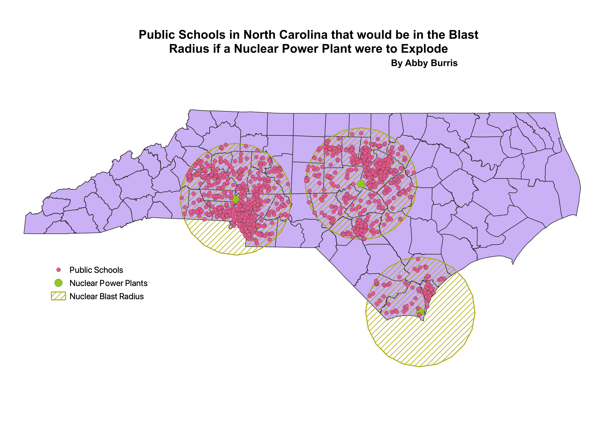

If a nuclear power plant were to explode, anything within a 50 mile radius would be exposed to some level of radiation. My map depicts the radius of exposure to radiation if a nuclear power plant were to explode, and it shows all of the public schools that would be in the radiation zone. I created a buffer with a 50 mile radius around each of the nuclear power plants in North Carolina. Then, I did an intersection to find the public schools that were inside of the buffer.
